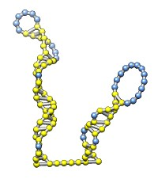
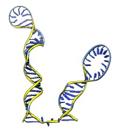
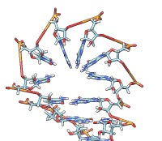
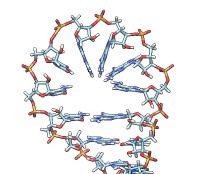
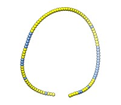
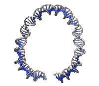

The rna command builds rough but potentially large-scale models of single-stranded RNA, given base-pairing information. Nucleotides are laid out schematically to form stems and loops in three dimensions. Rna also builds DNA and RNA/DNA double helices along a specified path. This command was used to make 9000-nucleotide RNA and DNA models for an HIV virus animation, along with the command play wiggle.
For building DNA, RNA, and hybrid double helices in standard conformations (A-form or B-form), see Build Structure. For more detailed RNA model-building and refinement from secondary structure information, see the Assemble2 plugin (available separately from Chimera).
The operation can be:
Operation keywords and their sub-keywords described below can be truncated to unique strings, and their case does not matter. Synonyms for true: True, 1. Synonyms for false: False, 0. A vertical bar “|” designates mutually exclusive options, and default settings are indicated with bold. Examples are provided below.
• rna duplex sequence path [ startSequence i ] [ type DNA | RNADNA ]Create an atomic model of double-helical DNA or hybrid RNA/DNA with a specified sequence on one strand and the complementary sequence on the other, following a given path. The sequence can be a string of upper-case letters (such as AGCTU) or the pathname of a FASTA file containing the desired sequence. The startSequence option (default 1) indicates where to start within the supplied sequence. The path is specified as a series of atoms or markers (such as from rna path or rna smoothPath), where each atom or marker represents the center of one base pair. The type of double helix can be DNA (default) or RNADNA (hybrid RNA/DNA).• rna minimizeBackbone model [ chunkSize c ] [ steps steps ] [ conjugateGradientSteps cgsteps ] [ updateInterval i ] [ nogui true | false ]Algorithm: Basepair atomic templates are placed along the path, with a twist of 36° per base pair. The templates are based on PDB entry 1BNA.
Energy-minimize the backbone of RNA and/or DNA in model (a molecule model specified by ID number), keeping the bases fixed. For computational expediency, minimization is applied to successive nonoverlapping segments of chunkSize (default 10) consecutive residues. The purpose is to fix long bonds and bad angles generated by joining template fragments (as is done by rna model and rna duplex), rather than to resolve any nonlocal conflicts. The calculation uses the minimize command with the specified number of steepest-descent steps (default 100), conjugateGradientSteps (default 100), updateInterval (default 10), and nogui setting (default true). These correspond to the minimize command options nsteps, cgsteps, interval, and nogui, respectively.• rna model sequence ( path spec | pairs p ) [ startSequence i ] [ length l ] [ circle true | false ] [ randomBranchTilt angle ] [ stemColor color ] [ loopColor color ] [ name n ]
Create an atomic model of single-stranded RNA. The sequence can be a string of upper-case letters (such as AGCTU) or the pathname of a FASTA file containing the desired sequence. The startSequence option (default 1) indicates where to start within the supplied sequence. Either a path or pairs must be given. The path to be followed by the RNA is specified as a series of markers from rna path (which also assigns nucleotide orientations required to create the model). The pairs specification and associated options length, circle, and randomBranchTilt are the same as described for rna path. Base-paired and non-base-paired nucleotides in the resulting structure will be colored according to the stemColor and loopColor values, respectively, where each color can be any color name that specifies a single color. The name option gives the name of the resulting molecule model (default RNA).• rna path pairs [ length l ] [ circle true | false ] [ radius r ] [ randomBranchTilt angle ] [ stemColor color ] [ loopColor color ] [ name n ]Algorithm: The path of the RNA is either precomputed with rna path or computed implicitly using the same algorithm as that command. The algorithm generates a series of markers and assigns an orientation to each marker (details...). Atomic model templates are placed in the computed orientations, with template coordinates 0,0,0 (atom N9 in A and G nucleotides, atom N1 in C and U nucleotides) on top of the markers. In stem regions, orientations are chosen to form base-pairing hydrogen bonds. In loops (which are shaped like lobes), orientations are chosen to stack the bases perpendicular to the plane of the lobe and to extend them toward the center line of the lobe or the center of the semicircle that forms the lobe end. The atomic templates are in the file rna-templates.pdb within the Chimera RNALayout module.
Create a path of markers, one marker per nucleotide, to represent an RNA molecule with specified secondary structure (base-pairing interactions). Consecutive markers and base-paired markers are connected by links. Stretches of base-paired nucleotides are stems, whereas nucleotides that are not base-paired are said to belong to loops. Stems are described with triples of integers. For example, 1,50,10 indicates pairing nucleotide 1 with nucleotide 50 at the start of a 10-bp stem, such that 2 and 49, 3 and 48, ... 10 and 41 are also paired. Multiple stems can be specified with additional triples (e.g., 1,50,10,60,70,2 describes two stems), and any number of stems can be given. A limitation is that residues within a stem range cannot be paired with residues beyond that range; for example, if a stem starts at 1,50, no other stem can pair residues in the range 1-50 with residues outside that range. The required pairs argument can be either a comma-separated list of numbers or the pathname of a text file containing three columns, one line per stem.• rna smoothPath path [ radius r ] [ spacing s ] [ kinkInterval ki ] [ kinkRadius kr ] [ name n ]Residue numbers in the resulting marker set start at 1. The last residue number is the highest number specified for a stem, unless a higher number is given with the length option. The circle option (default false) controls whether the overall RNA layout is circular or linear. The radius option specifies marker radius (default 2.0 Å). Stem and loop orientations are produced by random rotations, where each angle of rotation is obtained by multiplying the randomBranchTilt angle (default 0°) by a random number uniformly distributed between –1 and 1. Paired and unpaired markers are colored according to the stemColor and loopColor values, respectively, where each color can be any color name that specifies a single color. The name option gives the name of the resulting marker model (default RNA path).
Algorithm: Stem regions are generated as twisted double helices rotating 36° per base pair, with pairs 4 Å apart along the helix axis and the markers for paired nucleotides 9 Å apart. The line between the paired markers is perpendicular to the helix axis and 4 Å from that axis. Markers for loop nucleotides are 5 Å apart. Loops are laid out as lobes in which two parallel lines of nucleotides are joined by a semicircle of nucleotides at one end. The semicircle contains 8 nucleotides, and the straight segments may contain up to 10 nucleotides each. Loops of more than 28 nucleotides will be laid out as two side-by-side lobes. The RNA between the two nucleotides at the end of a stem forms a series of loops and stems, or cycle. A cycle is laid out in a circle, that is, the points at which loops and stems connect to the cycle are placed on a planar circle. The loops and stems radiate outward within same plane unless a nonzero randomBranchTilt angle is given. If circle is false, the top-level cycle is laid out in a straight line instead of a circle, and each stem or loop is rotated about the previous one by 145° in addition to any random tilt. Except for the random tilt, the geometric parameters are currently hard-coded.
Create a new path of markers that is a smoothed version of an input path (such as from rna path). The smoothing assures a minimum radius of curvature (radius r, default 50 Å) and produces a set of markers with uniform spacing s (default 3.33 Å). The original use was to create a path for duplex DNA approximating the path of a single-stranded RNA, but without sharp kinks. To allow for some sharper kinks, a different minimum radius of curvature given by kinkRadius can be applied every kinkInterval markers (default is no kinks). The name option gives the name of the resulting marker model (default smooth path).Algorithm: The first new marker is placed at the first marker of the input path. Subsequent markers are placed in the direction from the most recent new marker to the next input marker. If that direction would cause a bend with radius of curvature less than required, as judged by the angle made by the last segment of the new path and the next segment, the angle is expanded to give the minimum allowed radius of curvature (a bend of 2*asin(spacing/2*radius)). The next marker is placed in this direction, at the specified distance from the previous marker.
Each of the rna operations is illustrated here for the first 100 nucleotides of HIV RNA, with secondary structure as described in:
Architecture and secondary structure of an entire HIV-1 RNA genome. Watts JM, Dang KK, Gorelick RJ, Leonard CW, Bess JW Jr, Swanstrom R, Burch CL, Weeks KM. Nature. 2009 Aug 6;460(7256):711-6.
The full-length HIV RNA model can be viewed in this HIV virus animation.
|  |  |  |  |
| rna path pairings.txt length 100 | rna model hiv-pNL4-3.fasta #0 start 455 | Without minimization. | rna min #1 |
|  |  | ||
| rna smooth #0 | rna duplex #2 hiv-pNL4-3.fasta start 455 |
with base pairing file pairings.txt containing
1 57 3 5 54 11 17 43 5 25 38 4 58 104 8 67 94 3 70 90 4
and sequence file hiv-pNL4-3.fasta containing
>gi|296556482|gb|AF324493.2| HIV-1 vector pNL4-3, 1-9709 TGGAAGGGCTAATTTGGTCCCAAAAAAGACAAGAGATCCTTGATCTGTGGATCTACCACACACAAGGCTA CTTCCCTGATTGGCAGAACTACACACCAGGGCCAGGGATCAGATATCCACTGACCTTTGGATGGTGCTTC AAGTTAGTACCAGTTGAACCAGAGCAAGTAGAAGAGGCCAATGAAGGAGAGAACAACAGCTTGTTACACC CTATGAGCCAGCATGGGATGGAGGACCCGGAGGGAGAAGTATTAGTGTGGAAGTTTGACAGCCTCCTAGC ATTTCGTCACATGGCCCGAGAGCTGCATCCGGAGTACTACAAAGACTGCTGACATCGAGCTTTCTACAAG GGACTTTCCGCTGGGGACTTTCCAGGGAGGTGTGGCCTGGGCGGGACTGGGGAGTGGCGAGCCCTCAGAT GCTACATATAAGCAGCTGCTTTTTGCCTGTACTGGGTCTCTCTGGTTAGACCAGATCTGAGCCTGGGAGC TCTCTGGCTAACTAGGGAACCCACTGCTTAAGCCTCAATAAAGCTTGCCTTGAGTGCTCAAAGTAGTGTG